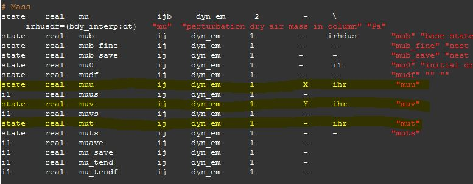

WRF Resources
WRF Model Tutorial
The Weather Research and Forecasting Model is used by researchers and operational meteorologists to create custom made weather simulations to study specific situations or forecast in specific regions. The model is developed by UCAR and they have a very handy tutorial, but I found it nice to make my own with specific instructions for runing WRF on the group computers at the University of Utah. Hopefully this is helpful to others.
Submitting Jobs to Kingspeak
This is how you submit multiprocessor WRF jobs to Kingspeak. Includes information on using SLURM.
GEOGRID Options
In the namelist.wps file there is an option to change the geog_data_res. There are several different types to choose from. Instructions for changing this are found here, but the available options are a little unclear. One obvious piece of information missing from this documentation is that it doesn't tell you how recent these data sets were created. Some of them appear to use decade-old land use surveys. So pay attention to what geo data you decide to use.
The available data sets can be found on the geogrid download page here. My color scheme can be found on github landuse_colormap.py .
The Great Salt Lake level in all these optoins are outdated. In our department we routinely perform some surgery to shrink the lake.
I'm told that the experimental HRRR at ESRL is implementing an updated land use data set and has also adjusted the size of the Great Salt Lake.
Here's what the land use looks like for northern Utah with the following options...
MODIS 15 second arch data

MODIS 30 second arch data. Look how large the Great Salt Lake is! This represents the high lake levels in 2001. The lake is currently at record low levels.

MODIS Lake (30 second arch data) + with 30 second USGS filling in missing data This is what the current HRRR model uses!

USGS 30 second arch data

Update WRF Registry to output Inverse Density and Time-averaged Mass Flux variables
Not all variables that WRF calculates are outputted to the wrfout file. In order to output the inverse density (alt) or the time-averaged mass flux (muu, muv, mut) variables you'll need to make some changes to the WRF registry. (Thanks Derek Mallia for this solution.)
Tutorial slides about the registery can be found here.
To add the mass flux and inverse density variables, do the following:
- Enter the WRFV3/Registry/ directory.
- Changes will need to be made to the Registry.EM_COMMON file in order
to get the WRF to output the mass-averaged variables discussed in Nehrkorn et al. 2010.
Open up Registry.EM_COMMON with your favorite text editor (mine is Visual Stuido Code) and find the following variables:
- muu
- muv
- mut
- alt
- Change the second "dash"
to ihr which tells the WRF to read and output these variables
Before:
state real muu ij dyn_em 1 - - "muu"
state real muv ij dyn_em 1 - - "muv"
state real mut ij dyn_em 1 - - "mut"
state real alt ikj dyn_em 1 - - "alt"
After:
state real muu ij dyn_em 1 - ihr "muu"
state real muv ij dyn_em 1 - ihr "muv"
state real mut ij dyn_em 1 - ihr "mut"
state real alt ikj dyn_em 1 - ihr "alt"
Mine looks like this: 
- Once this is done, leave the registry directory and cd into the following directory: cd test/em_real
- Edit the namelist.input file and under the &dynamics header add the following lines:
do_avgflx_em = 1, 1, 1, 1, 1, 1, 1, 1, 1,
do_avgflx_cugd = 1, 1, 1, 1, 1, 1, 1, 1, 1,
- Recompile WRF.
- When you run WRF you will see the new variables added to your output file.
Output a Variable at Higher Frequency
In order to output a variable at a higher frequency you have to change the namelist options as outlined here. I have added two new output streams. One that outputs every 12 hours (stream 23) and one that outputs every 10 minutes (stream 24). Note: Steams can range from 0-24, though, some are reserved for special tasks (look at the documentation for this).
The file "myoutfields_d01.txt" tells WRF to write the T2 and tr17_1 to stream 24 and HGT and LANDMASK to stream 23. Note: Do not include any spaces!
+:h:24:T2,tr17_1
+:h:23:HGT,LANDMASK
In namelist.input I added these lines in the &time_control section:
iofields_filename = "myoutfields_d01.txt", ! Name of file that tells WRF what to output
io_form_auxhist24 = 2, ! Output stream 24 in netCDF format
auxhist24_interval = 10, ! Output stream 24 every 10 minutes
io_form_auxhist23 = 2, ! Output stream 23 in netCDF format
auxhist23_interval = 720, ! Output stream 23 every 12 hours
Or, if you have two domains...
iofields_filename = "myoutfields_d01.txt", "myoutfields_d02.txt"
io_form_auxhist24 = 2,
auxhist24_interval = 10, 10,
io_form_auxhist23 = 2,
auxhist23_interval = 720, 720,
When you run WRF with these options it will create two new netCDF files called auxhist23_d01_2015-06-18_00:00:00 and auxhist24_d01_2015-06-18_00:00:00. You can view these in ncview like other WRF output.
Time Series and Vertical Profile at a point with tslist
You can create time series output for every time step at specified points using the ts_list option. You'll have to put together a TS list. For example, save the following as tslist in your /test/em_real/ directory and change the namelist.input option max_ts_locs to the number of stations in your list.
#-----------------------------------------------#
# 24 characters for name | pfx | LAT | LON |
#-----------------------------------------------#
Salt Lake Airport KSLC 40.771 -111.965
Spanish Fork UKBKB 40.099 -111.628
William Browning Bldg WBB 40.766 -111.848
Neil Armstrong Acadmey NAA 40.711 -112.014
I-15 Spaghetti UT23 40.717 -111.904
I-15/I-215 UT12 40.637 -111.904
Legacy Parkway UTLGP 40.908 -111.915
Kaysville-Utah Fruit FG005 41.021 -111.930
Fremont Is. Summitt O3S08 41.171 -112.341
Fremont Is. Kates PT O3S07 41.134 -112.311
Gunnison Is. GNI 41.335 -112.855
Hat Is. HATUT 41.071 -112.586
Hawthorne QHW 40.734 -111.872
GSL Buoy GSLBY 40.890 -112.346
Badger Is. Tripod UFD08 40.943 -112.562
MiniSodar2 USDR2 40.749 -112.034
MiniSodar1 USDR1 41.084 -112.113
Odgen-Hinckley Airport KOGD 41.194 -112.016
Provo Airport KPVU 40.217 -111.717
Spanish Fork Airport QSF 40.138 -111.660
Farmington Bay - Goose O3S02 40.957 -111.931
Farnsworth Peak FWP 40.659 -112.202
Herriman QH3 40.496 -112.036
Saltaire QSA 40.806 -112.050
Bountiful - Viewmont QBV 40.898 -111.886
Brigham City QBR 41.493 -112.018
Hill AFB O3S04 41.105 -111.972
Flight Park South FPS 40.457 -111.905
 Click here to view station data from WRF run and actual observations.
Click here to view station data from WRF run and actual observations.
Urban Canopy Model
Salt Lake City and other urban areas in Utah can be called an "Urban Forest." Unlike some large cities with lots of concrete, Salt Lake City has many trees and vegetated areas. Because of this, we turn on the Urban Canopy Model. This is a good thing to do when running WRF at 1 km resolution because we need to simulate the urban influence on momentum and energy transfer better.
Turn on the urban canopy model by changing the namelist option sf_urban_physics = 1
Also, adjust the amount of trees and vegetated areas in the city by modifying the URBPARM.TBL file found in the run or test/em_real directory.
I changed the "Fraction of urban landscape that does not have natural vegetation" to 0.5, 0.4, 0.3
Miscellaneous
Setting Up CHPC Modules: .tcshrc, custom.csh, and .aliases
To get started, follow the instructions on their website here.
For WRF users at the Universiyt of Utah, you can get my most recent CHPC setting files on GitHub.
Note: If you are having issues, confirm that your custom file is loading correctly by inserting a few echo statements. There may be some hangup in your .aliases file that prevents the .custom file to load. If that is the case, review your .aliases file for potential road blocks.